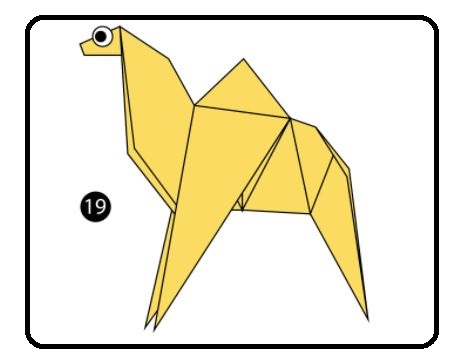

Chameleon
Interesting facts about Chameleon
- Chameleons have eyes in the backs of their heads
- Chameleons have extremely powerful tongues

Camel
Interesting facts about Chameleon
- The scientific name of camels is'Camelus' Camels can also close their nostrils.
Bear
Interesting facts about bears
- Depending on the species, bears can weigh from 27 kg to 700 kg.
- Foxes, raccoons, and seals are the bear’s closest relatives.

Pigeons
Interesting facts about pigeons
- Pigeons are incredibly complex and intelligent animals
- Pegion kill and eat thier own chicks if they fall down on the ground.
Panda
Interesting facts about pandas
- An adult panda can eat 12–38 kilos of bamboo per day!
- Prehistoric pandas lived up to 2 million years ago. Is'nt it amazing!
Cicada
Interesting facts about Cicada
- Cicadas can survive a huge fall as babies, or nymphs.
- They’re true bugs .Calling them a bug and is scientifically accurate.